Web Server Statistics for ioptimus.me
Web Server Statistics for ioptimus.me
Program started on Tue, May 31 2022 at 1:15 AM.
Analyzed requests from Thu, May 26 2022 at 5:56 PM to Mon, May 30 2022 at 5:38 PM (3.99 days).
Web Server Statistics for ioptimus.meProgram started on Tue, May 31 2022 at 1:15 AM.
Analyzed requests from Thu, May 26 2022 at 5:56 PM to Mon, May 30 2022 at 5:38 PM (3.99 days).
(Go To: Top | General Summary | Monthly Report | Daily Summary | Hourly Summary | Domain Report | Organization Report | Redirected Referrer Report | Referring Site Report | Browser Report | Browser Summary | Operating System Report | Status Code Report | File Size Report | File Type Report | Directory Report | Request Report)
Successful requests: 591
Average successful requests per day: 147
Successful requests for pages: 169
Average successful requests for pages per day: 42
Failed requests: 5
Redirected requests: 24
Distinct files requested: 87
Distinct hosts served: 30
Data transferred: 3.97 megabytes
Average data transferred per day: 0.99 megabytes
(Go To: Top | General Summary | Monthly Report | Daily Summary | Hourly Summary | Domain Report | Organization Report | Redirected Referrer Report | Referring Site Report | Browser Report | Browser Summary | Operating System Report | Status Code Report | File Size Report | File Type Report | Directory Report | Request Report)
Each unit ( ) represents 5 requests for pages or part thereof.
) represents 5 requests for pages or part thereof.
| month | #reqs | #pages | |
|---|---|---|---|
| May 2022 | 591 | 169 |   |
Busiest month: May 2022 (169 requests for pages).
(Go To: Top | General Summary | Monthly Report | Daily Summary | Hourly Summary | Domain Report | Organization Report | Redirected Referrer Report | Referring Site Report | Browser Report | Browser Summary | Operating System Report | Status Code Report | File Size Report | File Type Report | Directory Report | Request Report)
Each unit () represents 2 requests for pages or part thereof.
| day | #reqs | #pages | |
|---|---|---|---|
| Sun | 56 | 51 |   |
| Mon | 131 | 42 |  |
| Tue | 0 | 0 | |
| Wed | 0 | 0 | |
| Thu | 22 | 0 | |
| Fri | 117 | 15 | |
| Sat | 265 | 61 | |
(Go To: Top | General Summary | Monthly Report | Daily Summary | Hourly Summary | Domain Report | Organization Report | Redirected Referrer Report | Referring Site Report | Browser Report | Browser Summary | Operating System Report | Status Code Report | File Size Report | File Type Report | Directory Report | Request Report)
Each unit () represents 1 request for a page.
| hour | #reqs | #pages | |
|---|---|---|---|
| 0 | 6 | 6 | |
| 1 | 6 | 6 | |
| 2 | 7 | 7 | |
| 3 | 6 | 6 | |
| 4 | 6 | 6 | |
| 5 | 7 | 7 | |
| 6 | 6 | 6 | |
| 7 | 31 | 7 | |
| 8 | 112 | 9 | |
| 9 | 59 | 7 | |
| 10 | 31 | 8 | |
| 11 | 29 | 8 | |
| 12 | 67 | 9 | |
| 13 | 21 | 8 | |
| 14 | 6 | 6 | |
| 15 | 31 | 6 | |
| 16 | 6 | 6 | |
| 17 | 36 | 10 | |
| 18 | 19 | 4 | |
| 19 | 4 | 4 | |
| 20 | 4 | 4 | |
| 21 | 56 | 8 | |
| 22 | 16 | 13 | |
| 23 | 19 | 8 | |
(Go To: Top | General Summary | Monthly Report | Daily Summary | Hourly Summary | Domain Report | Organization Report | Redirected Referrer Report | Referring Site Report | Browser Report | Browser Summary | Operating System Report | Status Code Report | File Size Report | File Type Report | Directory Report | Request Report)
Listing domains, sorted by the amount of traffic.
| #reqs | %bytes | domain |
|---|---|---|
| 591 | 100% | [unresolved numerical addresses] |
(Go To: Top | General Summary | Monthly Report | Daily Summary | Hourly Summary | Domain Report | Organization Report | Redirected Referrer Report | Referring Site Report | Browser Report | Browser Summary | Operating System Report | Status Code Report | File Size Report | File Type Report | Directory Report | Request Report)
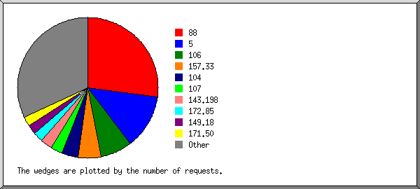
Listing organizations, sorted by the number of requests.
| #reqs | %bytes | organization |
|---|---|---|
| 160 | 44.14% | 106 |
| 137 | 4.59% | 88 |
| 116 | 8.89% | 157.33 |
| 62 | 16.84% | 110 |
| 25 | 0.22% | 42 |
| 21 | 7.78% | 157.35 |
| 20 | 8.08% | 104 |
| 12 | 0.17% | 152.57 |
| 11 | 4.82% | 107 |
| 10 | 3.89% | 205.169 |
| 5 | 0.17% | 95 |
| 3 | 0.07% | 176.53 |
| 2 | 0.04% | 45 |
| 2 | 0.07% | 89 |
| 2 | 65.109 | |
| 1 | 0.03% | 13 |
| 1 | 0.10% | 188.165 |
| 1 | 0.10% | 151.106 |
(Go To: Top | General Summary | Monthly Report | Daily Summary | Hourly Summary | Domain Report | Organization Report | Redirected Referrer Report | Referring Site Report | Browser Report | Browser Summary | Operating System Report | Status Code Report | File Size Report | File Type Report | Directory Report | Request Report)
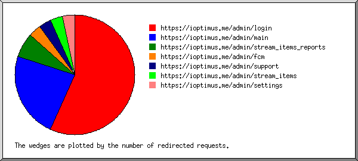
Listing referring URLs, sorted by the number of redirected requests.
(Go To: Top | General Summary | Monthly Report | Daily Summary | Hourly Summary | Domain Report | Organization Report | Redirected Referrer Report | Referring Site Report | Browser Report | Browser Summary | Operating System Report | Status Code Report | File Size Report | File Type Report | Directory Report | Request Report)
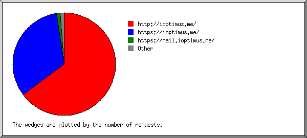
Listing referring sites, sorted by the number of requests.
| #reqs | site |
|---|---|
| 219 | https://ioptimus.me/ |
| 169 | http://ioptimus.me/ |
| 1 | http://www.ioptimus.me/ |
| 1 | https://kaiser.int3rnet.net:2083/ |
(Go To: Top | General Summary | Monthly Report | Daily Summary | Hourly Summary | Domain Report | Organization Report | Redirected Referrer Report | Referring Site Report | Browser Report | Browser Summary | Operating System Report | Status Code Report | File Size Report | File Type Report | Directory Report | Request Report)
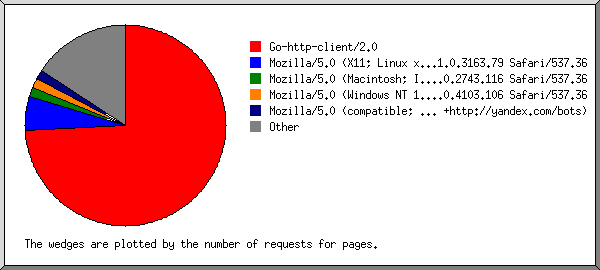
Listing browsers with at least 1 request for a page, sorted by the number of requests for pages.
| #reqs | #pages | browser |
|---|---|---|
| 137 | 137 | Go-http-client/2.0 |
| 191 | 8 | Mozilla/5.0 (Windows NT 10.0; Win64; x64) AppleWebKit/537.36 (KHTML, like Gecko) Chrome/102.0.5005.61 Safari/537.36 |
| 5 | 5 | Go-http-client/1.1 |
| 7 | 5 | Mozilla/5.0 (Windows NT 10.0; Win64; x64) AppleWebKit/537.36 (KHTML, like Gecko) Chrome/94.0.4606.61 Safari/537.36 |
| 31 | 4 | Mozilla/5.0 (X11; Linux x86_64) AppleWebKit/537.36 (KHTML, like Gecko) Chrome/61.0.3163.79 Safari/537.36 |
| 21 | 2 | Mozilla/5.0 (Linux; Android 11; RMX2001) AppleWebKit/537.36 (KHTML, like Gecko) Chrome/101.0.0.0 Mobile Safari/537.36 |
| 12 | 2 | Mozilla/5.0 (Linux; Android 11; M2101K7BI) AppleWebKit/537.36 (KHTML, like Gecko) Chrome/100.0.4896.127 Mobile Safari/537.36 |
| 1 | 1 | Mozilla/5.0 (X11; Linux x86_64) AppleWebKit/537.36 (KHTML, like Gecko) Chrome/51.0.2704.103 Safari/537.36 |
| 10 | 1 | Mozilla/5.0 (Windows NT 10.0; Win64; x64) AppleWebKit/537.36 (KHTML, like Gecko) Chrome/76.0.3809.71 Safari/537.36 |
| 1 | 1 | Mozilla/5.0 (X11; Ubuntu; Linux x86_64; rv:58.0) Gecko/20100101 Firefox/58.0 |
| 1 | 1 | Mozilla/5.0 (iPhone; CPU iPhone OS 10_3_1 like Mac OS X) AppleWebKit/603.1.30 (KHTML, like Gecko) Version/10.0 Mobile/14E304 Safari/602.1 |
| 172 | 0 | [not listed: 3 browsers] |
(Go To: Top | General Summary | Monthly Report | Daily Summary | Hourly Summary | Domain Report | Organization Report | Redirected Referrer Report | Referring Site Report | Browser Report | Browser Summary | Operating System Report | Status Code Report | File Size Report | File Type Report | Directory Report | Request Report)
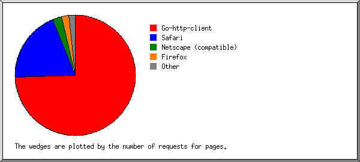
Listing browsers with at least 1 request for a page, sorted by the number of requests for pages.
| # | #reqs | #pages | browser |
|---|---|---|---|
| 1 | 142 | 142 | Go-http-client |
| 137 | 137 | Go-http-client/2 | |
| 5 | 5 | Go-http-client/1 | |
| 2 | 274 | 24 | Safari |
| 273 | 23 | Safari/537 | |
| 1 | 1 | Safari/602 | |
| 3 | 1 | 1 | Firefox |
| 1 | 1 | Firefox/58 | |
| 172 | 0 | [not listed: 2 browsers] |
(Go To: Top | General Summary | Monthly Report | Daily Summary | Hourly Summary | Domain Report | Organization Report | Redirected Referrer Report | Referring Site Report | Browser Report | Browser Summary | Operating System Report | Status Code Report | File Size Report | File Type Report | Directory Report | Request Report)
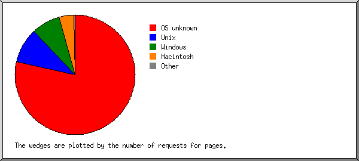
Listing operating systems, sorted by the number of requests for pages.
| # | #reqs | #pages | OS |
|---|---|---|---|
| 1 | 144 | 142 | OS unknown |
| 2 | 208 | 14 | Windows |
| 208 | 14 | Windows NT | |
| 3 | 236 | 10 | Unix |
| 236 | 10 | Linux | |
| 4 | 1 | 1 | Macintosh |
(Go To: Top | General Summary | Monthly Report | Daily Summary | Hourly Summary | Domain Report | Organization Report | Redirected Referrer Report | Referring Site Report | Browser Report | Browser Summary | Operating System Report | Status Code Report | File Size Report | File Type Report | Directory Report | Request Report)
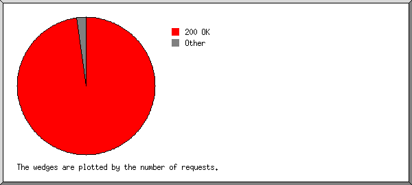
Listing status codes, sorted numerically.
| #reqs | status code |
|---|---|
| 585 | 200 OK |
| 24 | 302 Document found elsewhere |
| 6 | 304 Not modified since last retrieval |
| 5 | 404 Document not found |
(Go To: Top | General Summary | Monthly Report | Daily Summary | Hourly Summary | Domain Report | Organization Report | Redirected Referrer Report | Referring Site Report | Browser Report | Browser Summary | Operating System Report | Status Code Report | File Size Report | File Type Report | Directory Report | Request Report)
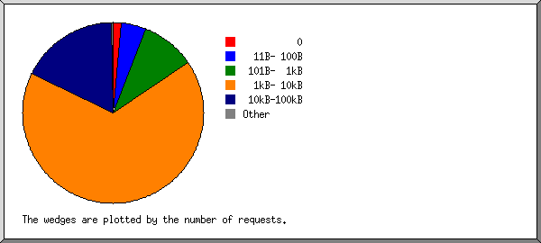
| size | #reqs | %bytes |
|---|---|---|
| 0 | 12 | |
| 1B- 10B | 0 | |
| 11B- 100B | 55 | 0.07% |
| 101B- 1kB | 123 | 1.58% |
| 1kB- 10kB | 299 | 16.60% |
| 10kB-100kB | 98 | 69.71% |
| 100kB- 1MB | 4 | 12.03% |
(Go To: Top | General Summary | Monthly Report | Daily Summary | Hourly Summary | Domain Report | Organization Report | Redirected Referrer Report | Referring Site Report | Browser Report | Browser Summary | Operating System Report | Status Code Report | File Size Report | File Type Report | Directory Report | Request Report)
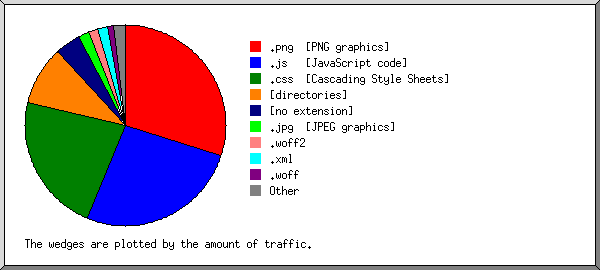
Listing extensions with at least 0.1% of the traffic, sorted by the amount of traffic.
| #reqs | %bytes | extension |
|---|---|---|
| 46 | 27.17% | .png [PNG graphics] |
| 78 | 20.98% | .js [JavaScript code] |
| 72 | 19.77% | .css [Cascading Style Sheets] |
| 6 | 11.27% | .jpg [JPEG graphics] |
| 169 | 5.65% | [directories] |
| 3 | 5.56% | .woff2 |
| 3 | 4.05% | .woff |
| 50 | 3.65% | [no extension] |
| 49 | 1.26% | .flow |
| 21 | 0.20% | .get |
| 14 | 0.18% | .authorize |
| 12 | 0.11% | .favorites |
| 68 | 0.15% | [not listed: 10 extensions] |
(Go To: Top | General Summary | Monthly Report | Daily Summary | Hourly Summary | Domain Report | Organization Report | Redirected Referrer Report | Referring Site Report | Browser Report | Browser Summary | Operating System Report | Status Code Report | File Size Report | File Type Report | Directory Report | Request Report)
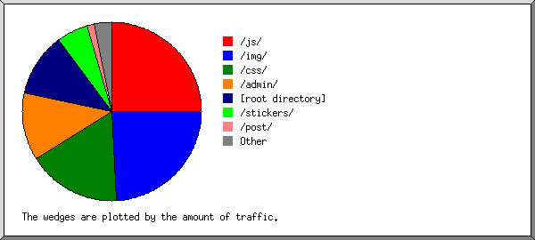
Listing directories with at least 0.01% of the traffic, sorted by the amount of traffic.
| #reqs | %bytes | directory |
|---|---|---|
| 118 | 24.01% | /admin/ |
| 54 | 16.98% | /js/ |
| 37 | 16.07% | /img/ |
| 33 | 12.99% | /css/ |
| 9 | 11.09% | /stickers/ |
| 4 | 9.28% | /post/ |
| 170 | 5.68% | [root directory] |
| 2 | 1.99% | /chat_images/ |
| 164 | 1.90% | /api/ |
(Go To: Top | General Summary | Monthly Report | Daily Summary | Hourly Summary | Domain Report | Organization Report | Redirected Referrer Report | Referring Site Report | Browser Report | Browser Summary | Operating System Report | Status Code Report | File Size Report | File Type Report | Directory Report | Request Report)
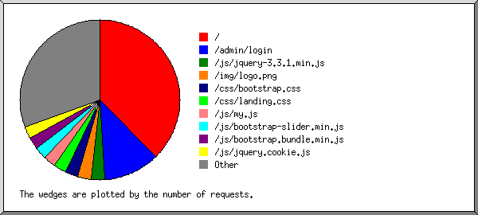
Listing files with at least 20 requests, sorted by the number of requests.
| #reqs | %bytes | last time | file |
|---|---|---|---|
| 169 | 5.65% | May/30/22 5:38 PM | / |
| 49 | 1.26% | May/30/22 3:27 PM | /api/v2/method/items.flow |
| 373 | 93.09% | May/30/22 3:27 PM | [not listed: 78 files] |